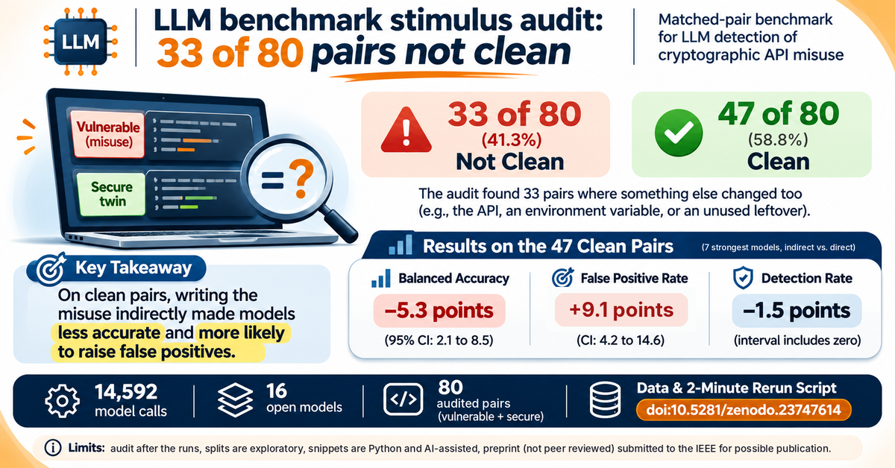

LLM benchmark stimulus audit: 33 of 80 pairs not clean
Sunny Chokshi. November 6, 2026.

After my runs finished I did an LLM benchmark stimulus audit on my own matched pairs. Of the 80 pairs that have both a plain and an indirect form, 33 differ in more than the route to the misuse, and 47 are clean matches. This post shows what the audit file lists, what happens to the results when I keep only the clean pairs, and how to recompute the numbers in a couple of minutes. You can download the data below.
Download the data on ZenodoGet the preprint on Zenodo
Why a matched pair benchmark needs an audit
Each pair holds a vulnerable snippet and a secure twin, written plainly and indirectly. The point is that only the way the misuse is written changes. If anything else changes between the forms, a score difference may not be due to the indirection alone. The audit came after the runs, and that order is a limit I return to below.
What the LLM benchmark stimulus audit found
The audit file records one primary reason per pair. By pair count: the API changes on the vulnerable side between forms (6), the plain form keeps an unused leftover of the indirect form (5), the indirect form states the safe value while the plain form omits it (5), the misuse depends on an environment variable (4), importlib is added in the indirect form (4), the secure twin changes API between forms (4), the secure twin contains the bad token (2), and other (3). That sums to 33. The unmatched group has five pairs in the audit file (cv01, cv02, cv04, cv05 and ns01). Two pairs also list a second reason, so the full list is in audit/audit_pairs.csv.
Do the results survive the audit?
Over all 80 pairs, balanced accuracy of the seven strongest models falls 4.5 points when the misuse is written indirectly (95% CI 1.4 to 7.6 in the release script, 1.3 to 7.6 in the paper, because the bootstrap seed differs). On the 47 clean pairs it falls 5.3 points (CI 2.1 to 8.5).
The audit changes where I think the drop comes from. On the clean pairs the false positive rate rises 9.1 points (CI 4.2 to 14.6), while detection falls 1.5 points and its interval includes zero (CI -1.6 to 4.8). Over all 80 pairs detection falls 3.6 points (CI 1.0 to 6.5), and the false positive rise is 5.4 points with an interval that includes zero (CI -0.1 to 10.8). Leaving out only the four unmatched certificate pairs (cv01, cv02, cv04 and cv05, which keeps ns01) raises the false positive rise from 5.4 to 8.0 points (CI 3.1 to 13.2), and the clean set gives 9.1 points with an interval that excludes zero.
Rerun it yourself
The record holds 14,592 model calls (11,232 in the main log and 3,360 in the paired replication) from 16 open models with 3 repeats each, run locally at temperature 0. You need Python 3 and nothing else. Unzip the release and run python3 analysis/v6.py . from the unzipped folder. It prints the numbers above, except the 1.3 to 7.6 interval, which comes from the paper's own script with a different seed. Every script reproduces its saved output byte for byte on the files in the record. Data is CC BY 4.0 and code is MIT. In the logs the variant field says obscured where the paper says indirect.
Limits
The audit came after the runs. The two exploratory splits in the paper were chosen after I saw the data, and the seven models in the paired study were chosen after the first study, so the confidence intervals treat them as fixed. Detection counts a vulnerable verdict given for any reason, and I did not check whether each detection named the right misuse. The snippets and labels were written with AI assistance and checked by me, so labeling errors are possible. The Ollama version was not recorded, and reruns of the model calls can differ by a few points even at temperature 0. The paper is a preprint, it is not peer reviewed, and it carries the notice that it has been submitted to the IEEE for possible publication.
Open question: would the audit have kept a different set of pairs if I had done it before the runs? The data cannot answer that.
Read and cite
Data package on Zenodo (doi:10.5281/zenodo.23747614) · Preprint on Zenodo (doi:10.5281/zenodo.23351769) · Paper page and PDF
Earlier post from the same study: A hex literal made LLM code reviewers raise false alarms.
Cite as: Chokshi, S. (2026). Does Indirection Hurt? Stimuli, per-call results, audit list and analysis scripts (v1.0.0) [Data set]. Zenodo. https://doi.org/10.5281/zenodo.23747614
Preprint: Chokshi, S. (2026). Does Indirection Hurt? Paired Evidence on LLM Review of Indirectly Written Cryptographic API Misuse [Preprint]. Zenodo. https://doi.org/10.5281/zenodo.23351769
Sunny Chokshi, PhD student, Information Technology, University of the Cumberlands. Research: adversarial robustness of LLMs in cybersecurity. ORCID · GitHub